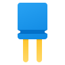
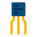
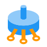

Komponenty Elektroniczne
Katalog elektroniczny – katalog produktów dostępnych w świecie elektroniki w formie elektronicznej.
 ElectronicKatalog
ElectronicKatalog
Katalog elektroniczny – katalog produktów dostępnych w świecie elektroniki w formie elektronicznej.
Rezystor, zwany także opornikiem, to pasywny, dwupinowy element elektryczny, który wprowadza do obwodu rezystancję elektryczną. W obwodach elektronicznych rezystory wykorzystywane są między innymi do zmniejszania przepływu prądu, dostosowywania poziomów sygnału, podziału napięć, a także do polaryzacji elementów aktywnych i zakończenia (terminacji) linii przesyłowych. Dostępne są oporniki o szerokiej gamie rezystancji rozciągającej się na dwanaście rzędów wielkości i o dużej gamie mocy - od typowych oporników niskiej mocy (0,125 W do 0,5 W) do rezystorów wielkiej mocy i oporowych elementów grzejnych (1000 i więcej W).
 Kondensator to elektroniczny element pasywny, magazynujący energię w polu elektrycznym. Jest to komponent z dwoma wyprowadzeniami. Efekt kondensatora jest znany jako pojemność. Chociaż istnieje pewna pojemność między dowolnymi dwoma przewodami elektrycznymi znajdującymi się w pobliżu siebie, kondensator jest elementem zaprojektowanym w celu uzyskania konkretnej pojemności pomiędzy swoimi wyprowadzeniami. Elementy te, jak większość elementów pasywnych, mają ogromną liczbę zastosowań w układach pasywnych i aktywnych, jako filtry, elementy obwodów rezonansowych itp.. Kondensator to jeden z podstawowych elementów projektów elektronicznych.
 Tranzystor jest urządzeniem półprzewodnikowym używanym do wzmacniania lub przełączania sygnałów elektronicznych i energii elektrycznej. Jest on podstawowym elementem konstrukcyjnym wielu elementów elektronicznych i nowoczesnych urządzeń elektronicznych i jest wszechobecny w systemach elektronicznych dookoła nas. Pierwszym praktycznie wdrożonym urządzeniem tego typu był tranzystor ostrzowy wymyślony w 1947 r. przez amerykańskich fizyków Johna Bardeena, Waltera Brattaina i Williama Shockleya. Tranzystor zrewolucjonizował całą elektronikę. Wynalezienie tranzystora utorowało drogę dla mniejszych i tańszych radiotelefonów, kalkulatorów i komputerów, a także do powstania wielu innych urządzeń i układów elektronicznych. Tranzystory to w dzisiejszych czasach element niezbędny w każdym projekcie elektronicznym.
Cewka, zwojnica – część obwodu elektrycznego, element elektroniczny bierny. Cewka posiada uzwojenie utworzone z pewnej liczby zwojów przewodnika nawiniętych np. na powierzchni walca (cewka cylindryczna), na powierzchni pierścienia (cewka toroidalna) lub na płaszczyźnie (cewka spiralna lub płaska). Wewnątrz lub na zewnątrz zwojów może znajdować się rdzeń magnetyczny wykonany zazwyczaj z materiału ferromagnetycznego. Cewka bez rdzenia magnetycznego (cewka powietrzna) to solenoid.
Diody LED i akcesoria - Dioda LED, to urządzenie półprzewodnikowe, które emituje promieniowanie elektromagnetyczne z zakresu światła widzialnego, ultrafioletu lub podczerwieni, pod wpływem przepływu prądu przez jej strukturę. Diody led produkowane obecnie charakteryzują się szeroką paletą emitowanych kolorów, włącznie z światłem białym, a także emisją fotonów spoza pasma widzialnego - w podczerwieni czy ultrafiolecie. W naszym sklepie z pewnością znajdziesz potrzebne diody elektroluminescencyjne oraz akcesoria do ich montażu czy ich zasilania lub sterowania.
Dioda to element półprzewodnikowy, który zasadniczo działa jak przełącznik przepuszczający prąd w jednym kierunku. Umożliwia łatwy przepływ prądu w jednym kierunku i znacznie utrudnia jego przepływ w przeciwnym kierunku.
Diody są też nazywane prostownikami, ponieważ zamieniają prąd przemienny (AC) na tętniący prąd stały (DC). Diody są klasyfikowane zależnie od typu, napięcia i obciążalności prądowej.
Diody mają polaryzacją określoną przez anodę (końcówka dodatnia) i katodę (końcówka ujemna). Większość diod zezwala na przepływ prądu tylko wówczas, gdy do anody jest przyłożone napięcie dodatnie. Na rysunku przedstawiono różne typy diod:

Potencjometr to bierny element elektroniczny nazywany inaczej jako rezystor nastawny. Element ten jest wyposażony w pokrętło (mniejsze na śrubokręt lub większe do ręcznej regulacji), które pozwala na regulację oporu między dwiema nóżkami potencjometru. Element ten można więc traktować jako rezystor o zmiennym oporze.
Podstawowym parametrem opisującym potencjometr jest rezystancja ścieżki oporowej, wyrażana w omach [Ω]. Rozpiętość rezystancji wynosi od pojedynczych omów do kilku megaomów. Drugim istotnym parametrem jest charakterystyka zmian rezystancji:
1.) liniowa (rezystancje R1 i R2 zmieniają się liniowo z ruchem ślizgacza),
2.) logarytmiczna (zmiana rezystancji jest logarytmiczna), używane głównie do regulacji głośności.